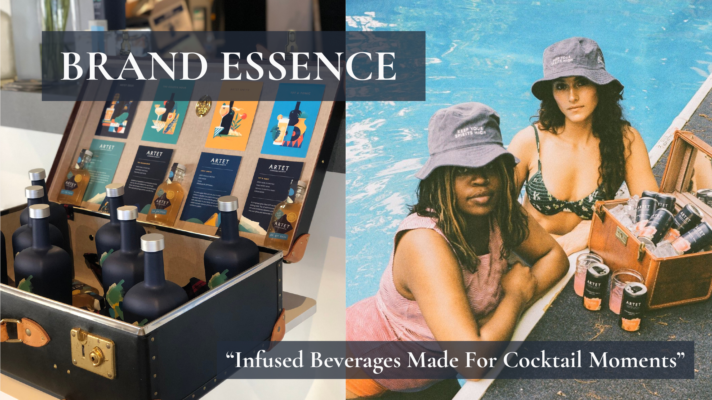
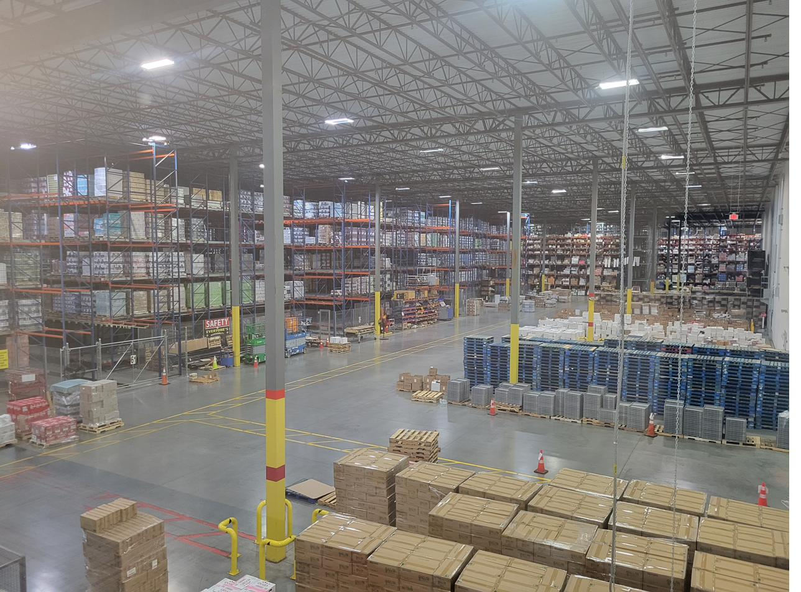
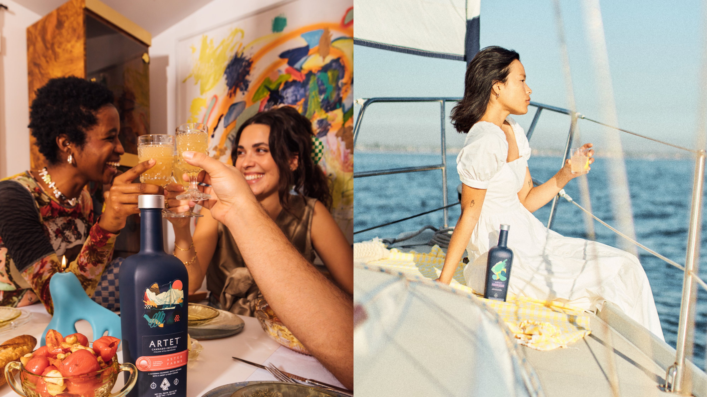
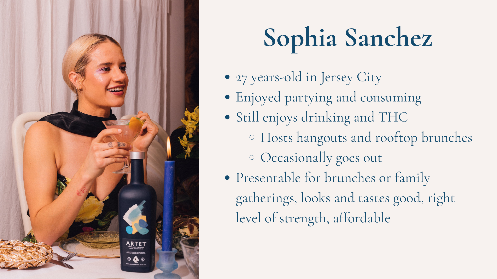
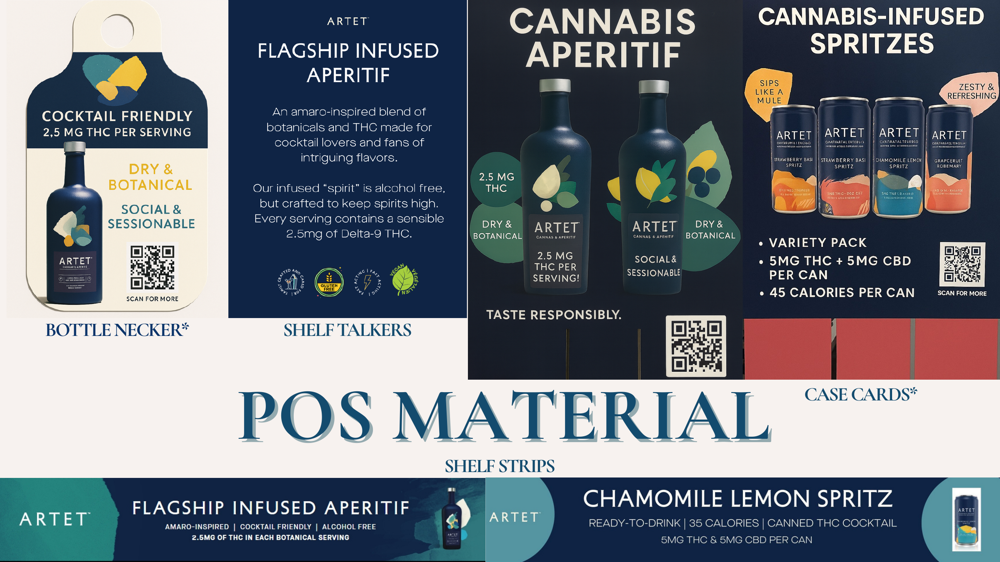
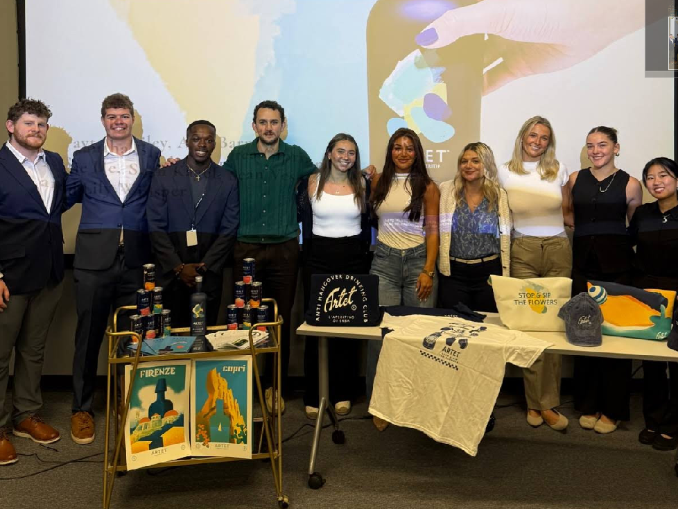
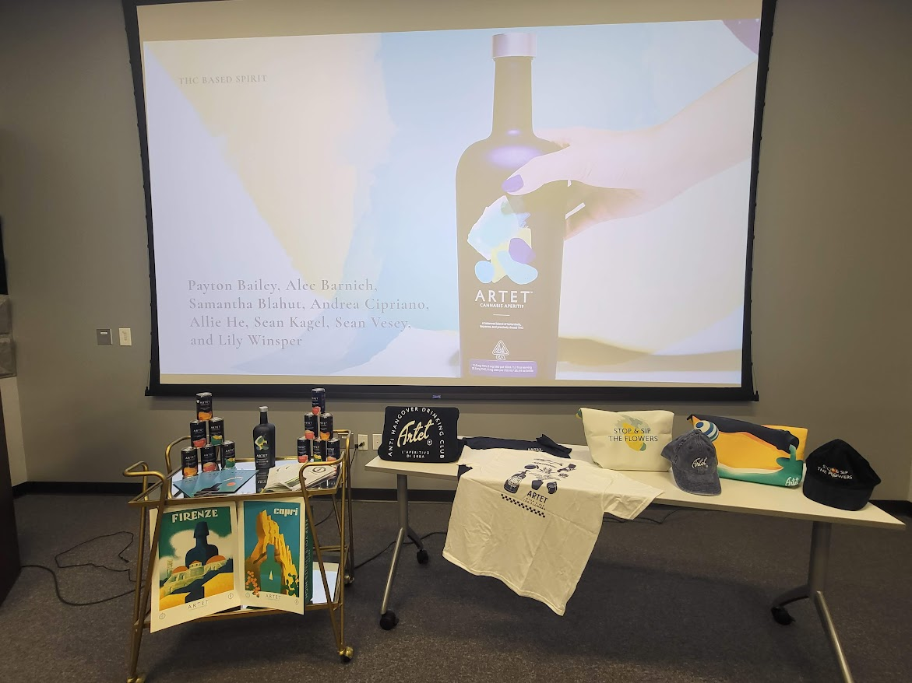

Overview
For the duration of the internship, all eight ABG interns collaborated on a single capstone project: a full brand launch strategy for Artet, a THC-infused cannabis aperitif entering the New Jersey market through ABG's distribution network. The project ran alongside individual work streams, building throughout the summer and culminating in a live presentation to roughly 50 attendees — including ABG's CEO and CFO, department heads, the founder of Artet, bartenders, and all intern managers. The team also served pre-made Artet cocktails to every attendee during the presentation.
Artet had already launched in markets including Los Angeles, Chicago, Minneapolis, Nashville, and New York. This was its New Jersey entry — and the challenge was figuring out exactly how to bring it in.

Brand essence: "Infused Beverages Made For Cocktail Moments" — positioning Artet as a refined social product, not a wellness supplement
The Challenge
Launching a THC-infused spirit isn't like launching a new wine. It sits at the intersection of beverage distribution, cannabis regulation, consumer education, and brand positioning — in a market where most customers and accounts had never encountered the product category before. The team had to think across pricing, warehousing, sales strategy, marketing, and customer education simultaneously.
Focus areas: target consumer research, marketing strategy, and customer education.
Process
Stakeholder meetings spanned the full launch ecosystem — meeting with everyone from the brand founder to the warehouse floor:
Research covered the full launch lifecycle: pricing, warehouse and distribution logistics, on- and off-premise sales strategy, digital marketing, and consumer and trade education.

Day in the field — visiting ABG's warehouse to understand the full distribution pipeline from shelf to delivery
Target Consumer Research
One of the core questions the team needed to answer: who is actually buying this? Artet occupies a unique space — a non-alcoholic, cannabis-infused aperitif positioned as a sophisticated social alternative, not a wellness shot or recreational product. That required careful consumer segmentation.

Target consumer lifestyle imagery used in the presentation — social, experience-driven consumers for whom Artet fits a refined, modern moment

Consumer persona developed to anchor the NJ launch strategy — a 27-year-old Jersey City resident who hosts gatherings and wants something that looks and tastes good
Research identified the primary target as social, experience-driven consumers aged 25–45 who are curious about cannabis but want it in a refined, familiar format. Secondary targets included the sober-curious segment and craft spirits enthusiasts looking for something new. This consumer framing shaped recommendations across the entire presentation — from which on-premise accounts to prioritize, to how bartenders should talk about the product, to what digital content would resonate.
Marketing & Customer Education
A key insight from the research: Artet's biggest barrier wasn't awareness — it was understanding. Customers and accounts didn't know what it was, how it worked, or how to serve it. Education had to come before promotion.

POS material strategy: bottle neckers, shelf talkers, shelf strips, and case cards to educate accounts and consumers at the point of decision
Contributions to this section included:
- Defining the consumer education narrative — what Artet is, how THC-infused spirits differ from alcohol, and what to expect from the experience
- Recommending digital marketing strategies aligned to the target consumer profile
- Identifying key on-premise targets (Jersey City, Hoboken, Morristown, Madison) and off-premise accounts (Total Wine, Bottle King, Joe Canal's) for the NJ launch
- Framing the sales rep training angle — giving ABG's reps the language to introduce Artet confidently to account buyers
The Presentation
On July 31st, the intern team presented the full brand launch strategy to an audience of approximately 50 people — ABG's CEO and CFO, upper management, department heads, the founder of Artet, bartenders, and all intern managers. The team also served pre-made Artet cocktails to every attendee, making it one of the more memorable final deliverables of the summer.

Presentation setup — product display cart, branded merch table, and live slide deck in the ABG conference room


Left: branded merch display including hats, tees, totes, and travel posters. Right: the full intern team after the presentation.

Final presentation day — the full display set up ahead of the 50-person audience including ABG's CEO, CFO, and Artet's founder
Outcomes
✦ Full brand launch strategy delivered to ABG and Artet leadership
✦ Presented live to ~50 stakeholders including CEO, CFO, and brand founder — with Artet cocktails served to the full audience
✦ Project spanned the complete launch lifecycle, from first stakeholder meeting to final presentation on the last day of the internship
✦ Developed cross-functional collaboration and business strategy skills working across 8 interns and multiple department heads simultaneously
Reflection
Most internship projects live in one lane. This one required understanding how pricing decisions affect sales strategy, how consumer research shapes bartender training, and how a single brand's story has to hold up across a warehouse floor and a cocktail menu at the same time. It was the most complete picture of how a product actually gets to market — and it made every other project that summer feel more connected.